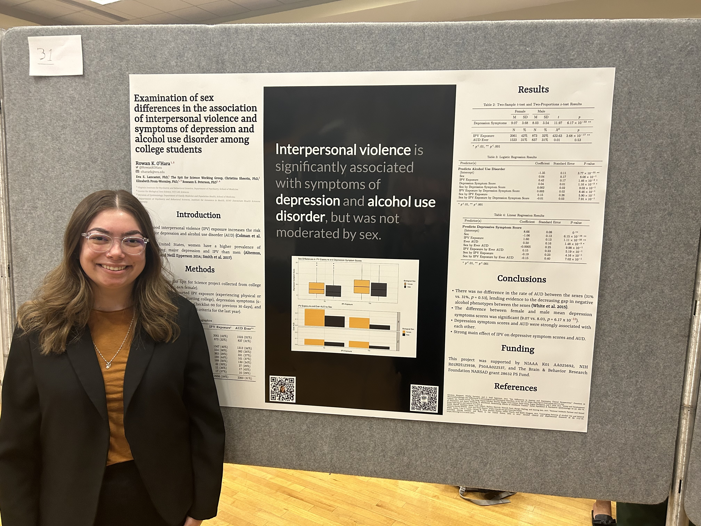
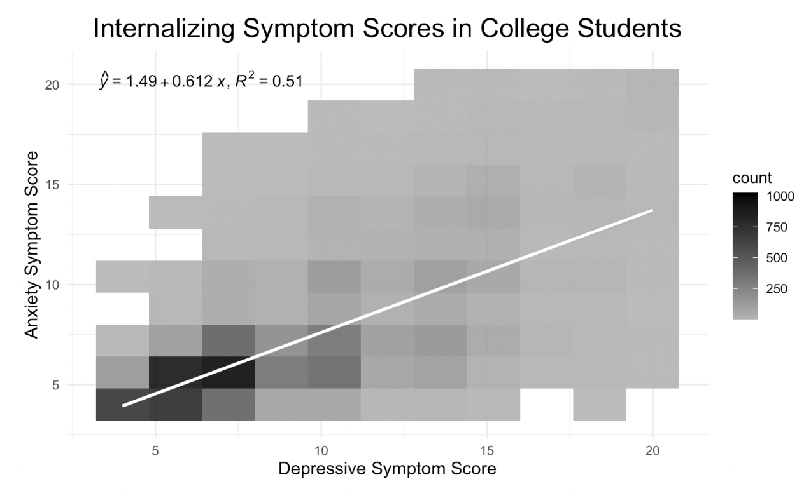
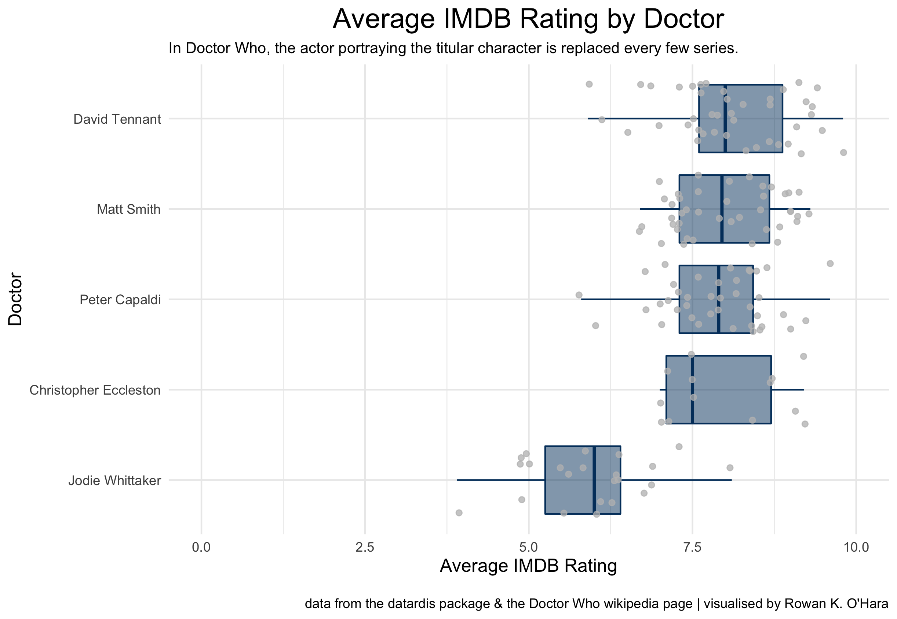
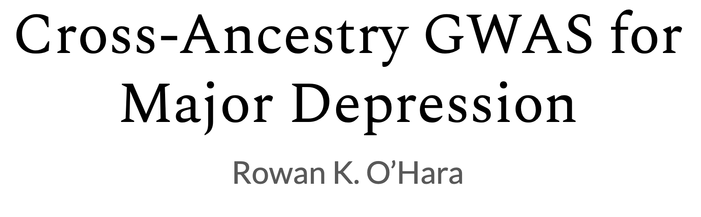
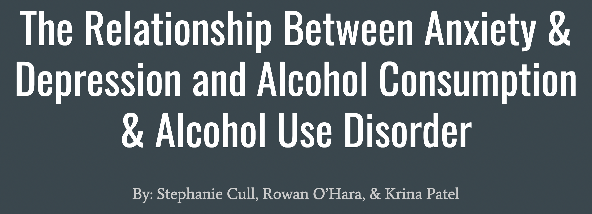
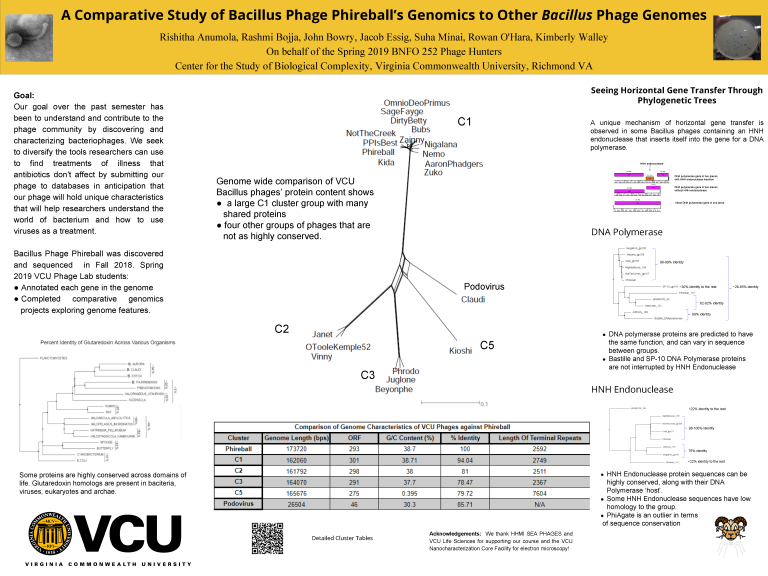

Projects
A common through thread all of my projects is the application of bioinformatics and data science. I am proficient in R and Python, and I have a basic understanding of Java, Shell Scripting, and SQL. I am experienced in UNIX and high-performance cluster computing environments, bioinformatics tools/databases, and wet-lab protocols.
Women’s Health Research Day
APRIL 2023
VCU’s Women’s Health Research Day is a poster and seminar session that promotes research efforts focusing on women’s health at VCU. My project examined sex differences in the association of interpersonal violence and symptoms of depression and alcohol use disorder among college students.

This GitHub repository includes all of my code used to clean the data and create this poster. The PDF of this poster can also be found here.
NIH Summer Poster Day
AUGUST 2022
NIH Summer Poster Day is a poster session that showcases NIH Summer Internship Program interns’ research projects completed over 2 months. I participated in the Graduate Data Science Summer Program and completed my project at the Laboratory of Translational Genomics in the Division of Cancer Epidemiology and Genetics at the National Cancer Institute. Short-read whole-genome sequencing data has more noise than long-read, which makes it difficult to genotype deletions such as the TERT MNS16A minisatellite. My summer project focused on computationally predicting MNS16A genotype using machine learning.

Women’s Health Research Day
APRIL 2022
VCU’s Women’s Health Research Day is a poster and seminar session that promotes research efforts focusing on women’s health at VCU. My project examined sex differences in the association of interpersonal violence and depression and anxiety symptoms.

HGEN 612
SPRING 2022
HGEN 612 is a data science course offered through the human genetics department at Virginia Commonwealth University, focusing on reproducibility and fundamentals of machine learning.

This dashboard showcases the data from the Heart Failure Prediction Dataset on Kaggle. Using this data, the classification of heart disease (HeartDisease) is predicted.

This dashboard showcases the data from the Lake Tahoe Basin Jeffrey pine beetle outbreak from 2003. Using this data, the minimum linear distance to the nearest brood tree (DeadDist) is predicted.
HGEN 611
FALL 2021
HGEN 611 is a data science course offered through the human genetics department at Virginia Commonwealth University, focusing on reproducibility and data visualization.

“Internalizing Feelings in College Students” is a data report characterizing data collected by Virginia Commonwealth University’s Spit for Science project, which studies substance use and mental health in college students. I cleaned, analyzed, and visualized the phenotypic data from the fall first year survey, specifically the depressive and anxiety scores in comparison to sex and race/ethnicity variables.

This data visualization is a part of my TidyTuesday submissions. #TidyTuesday is a weekly data project where the #RStats community share and practice their data cleaning and visualization skills. These submissions were published to both my OSF and Twitter accounts.
Independent Study
SPRING 2021
My independent study project, supervised by Dr. Roseann Peterson, focused on cross-ancestry Genome Wide Association Studies (GWAS) for major depression. I used LinkedIn Learning to learn how to utilize R for data cleaning and analysis.

BIOL 391
SPRING 2020
BIOL 391: Topics in Biology - Spit for Science is a course that led us through completing two research projects using the Spit for Science dataset.

My classmates and I analyzed the phenotypic data from the fall first year survey, specifically the depressive and anxiety scores in comparison to alcohol use disorder.
Undergraduate Research Symposium
SPRING 2019
The VCU Poster Symposium for Undergraduate Research and Creativity is an annual poster session giving an opportunity to undergraduate students to present their research. I presented a poster alongside my Phage Discovery II classmates on A Comparative Study of Bacillus Phage Phireball’s Genomics to Other Bacillus Phage Genomes. This project led to a Genbank submission of Bacillus phage Phireball Accession number MN038176.1 that I co-authored by annotating gene products 67-99.
